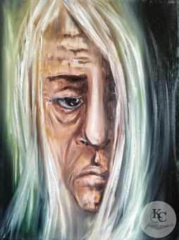
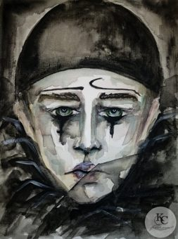
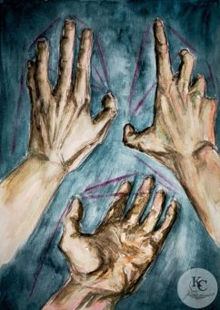
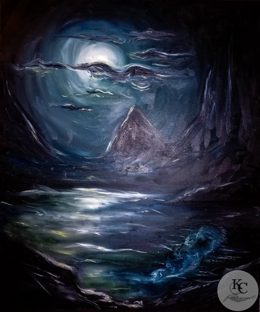
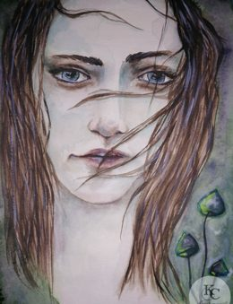
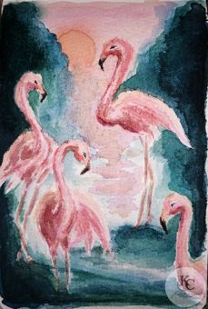

Ксения КомароваKomarova Ksenia
Художник · Москва
Живопись: масло, акварель. Веду проект «Мастерская-Колыбель».
Почта: ru-2006kc@yandex.ru · Telegram: @ru2006kc
Сайт: rukc2006.github.io/Porttfolio · Связаться со мнойСвязаться со мной
Избранные работы












| Название | Техника | Размер | Год | Показ |
|---|---|---|---|---|
| Старица-Шаманка | Масло, холст на подрамнике | 30×40 см | 2021 | |
| Tristitia | Акварель, бумага | 26×19 см | — | |
| 20.20 — Код доступа к игре | Масло, холст на подрамнике | 60×70 см | 2020 | |
| Руки | Акварель, бумага | 21×30 см | — | |
| Колесо Сансары | Масло, холст на подрамнике | 50×60 см | 2020 | Art Number 23, 2021 |
| Лунный свет | Масло, холст на подрамнике | 50×60 см | 2020 | |
| Под крылом | Масло, холст на подрамнике | 50×60 см | 2020 | |
| Кто ты? | Масло, поталь, холст на подрамнике | 50×40 см | 2020 | |
| Лесная ведьма с грибами | Акварель, бумага | 21×30 см | — | |
| Чумной доктор | Масло, холст на подрамнике | 50×60 см | 2020 | Art Number 23, 2021 |
| Фламинго | Акварель, бумага | 11×17 см | — | |
| Imago | Масло, холст на подрамнике | 30×40 см | 2021 |
Размеры указаны в сантиметрах. Портфолио: https://rukc2006.github.io/Porttfolio/artist.html
Материалы и техники
- Материалы
- Холст, бумага; масло, акварель.
- Техники
- Алла прима, импасто, традиционная.
Направления
Символизм, экспрессионизм, импрессионизм, абстракция.
Выставки и конкурсы
География участия: Москва, Лондон и Афины (онлайн-проекты).
2021
- Персональная выставка, Пространство SiriusPark, бизнес-центр, Каширское ш., 3, к. 2, Москва
- Онлайн-аукцион LOT TV #21, Bidspirit, Москва Работы: «Абстракция», «Мельница», «Вода».
- Персональная выставка, апрель, Гастромаркет и BlackHat бар, ул. Балчуг, 5, Москва
- Персональная выставка, март, Гастромаркет и BlackHat бар, ул. Балчуг, 5, Москва
- Международная выставка «ART ANTIDOT 2», Центр искусств «Art коробка», ТРЦ «Ривьера», Москва
- Онлайн-выставка project 'New Era', Галерея Art Number 23, Лондон, Афины
- Онлайн-аукцион LOT TV #16, Bidspirit, Москва Работы: «Шепот ручья», «Дыхание гор», «Мольба».
2019
- «Экологический кризис», Галерея Want&Paint, Москва
- «Выставка 25 молодых художников», Галерея Want&Paint, Москва
- Конкурс «Pebeo mixed media», Галерея Menier, Лондон
- Конкурс стикеров, International Typomania Festival 2019, Москва
2017
- Конкурс «Битва художников», Москва
Краткая творческая биография
Я архитектор маленьких миров. Соединяю рисунок и IT: в живописи ищу образ, в работе с данными и автоматизацией строю системы, и в обоих случаях меня занимает одно и то же: как из смысла и вдохновения собрать устойчивую форму.
Родилась и живу в Москве. Рисовать начала в изостудии «Планета молодых» под руководством А. А. Соловьёва (член СХ СССР с 1985 г.): направление «художественно-графический рисунок», 2005 год.
Основные материалы: холст, бумага, масло и акварель. Техники: алла прима, импасто, традиционная, а в ряде работ мастихин. Направления, в которых я работаю: символизм, экспрессионизм, импрессионизм и абстракция. Постоянно ищу новые формы и добавляю в работы что-то новое.
Учусь и сейчас. В 2025 году прошла курсы «Академический рисунок» и «История изобразительного искусства» (Пентаскул), арт-терапию (НИИДОПО), основы Adobe Photoshop (Нетология). В 2026 году добавились переподготовка «Преподаватель изобразительного искусства и черчения», программа «Менеджмент в сфере культуры и искусства», курс «Авторское право для дизайнера» (НАРХСИ) и мини-курс по дизайну и нейросетям (Formfactor).
С 2017 года участвую в конкурсах и выставках в Москве и онлайн: от конкурса «Битва художников» до персональных выставок 2021 года и международных онлайн-проектов (список выставок отдельно). Развиваю проект «Мастерская-Колыбель»: маленькие миры, символы и тёплые предметы.
Komarova Ksenia · https://rukc2006.github.io/Porttfolio/cv.html